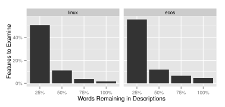
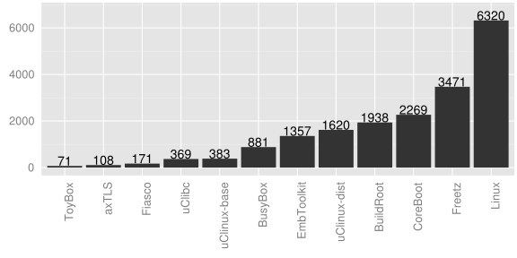

Feature Model Synthesis
Steven She
Generative Software Development Lab
What is Variability in Software?
Variability in a software system is its ability for a system to adapt and customize for a particular context.
—van Gurp et al., 2001
Why Variability Modeling?
Large software systems contain variability scattered over documentation, design and implementation.

Documentation
STACK enables the stack(9) facility... stack(9) will also be compiled in automatically if DDB(4) is compiled into the kernel.
Source Code
#ifdef DDB
#ifndef KDB
#error KDB must be enabled for DDB to work!
#endif
#endif
Configuring FreeBSD
options SCHED_ULE #ULE scheduler
options PREEMPTION #Enable kernel thread preemption
options INET #InterNETworking
options INET6 #IPv6 communications protocols- FreeBSD is configured by setting values to config options.
- Features and dependencies are scattered over documentation and code.
- Difficult to get an overview of the variability.
Variability Models

Explicit model of a system's variability.
Benefits include Graphical Configurators and
Automated Analysis.
Feature Models

Feature models describe the common and variable characteristics of products in a product line.
- First introduced by Kang et al.
- Describe a set of legal configurations.
Feature Model Syntax
$$\mathsf{powersave} \land \mathsf{acpi} \rightarrow \mathsf{cpu\_hotplug}$$
Configuration Semantics
Feature models describe a set of
legal configurations.
[[

]]
{
{ OS, staging },
{ OS, staging, net},
{ OS, staging, net, dst}
}
- Represented as a propositional formula, \(\varphi\).
- Satisfying assignments are the legal configurations.
What is Feature Model Synthesis?
Feature model synthesis is the construction and design of a feature model given a set of features and legal combinations of features.

Applicable Synthesis Scenarios
- Synthesis From Product Configurations
- Tool-Assisted Reverse Engineering from Code
- Feature Model Merge Operations
From Product Configurations

- Input consists of variants describing a product line.
- e.g., model variants, products developed by cloning code.
- Variants are compared and Variation Points (VPs) identified.
- VPs and VP configurations used as input for synthesis.
Tool-Assisted Reverse Engineering from Code
- Input consists of source code containing variability.
- e.g., FreeBSD with #ifdef annotated code.
- Static analysis of #ifdef statements identifies code fragments as VPs and dependencies between VPs.
Feature Model Operations


- Input consists of feature models.
- Feature models translated to a prop. formula by configuration semantics.
- Operation applied to formula then used as input to synthesis.
Requirements for FM Synthesis
- Input
- Support input as either Configurations or Dependencies.
- Sound and Complete
- Derive an exact feature model describing the input.
- Scalable
- Support 10 to 1000's of features (e.g., Linux, FreeBSD).
- Hierarchy Selection
- Use user input or heuristics to select a distinct feature hierarchy.
Thesis Statement
We efficiently synthesize large scale feature models
with algorithms that use
SAT-based reasoning on propositional formulas and
that suggest a feature hierarchy with
textual similarity heuristics.
Contributions
- Feature Graph Extraction
- She, Ryssel, Andersen, Wasowski, Czarnecki, “Efficient synthesis of feature models,” submitted for review in Journal of Information and Software Technology, 2013.
- She, Czarnecki, and Wasowski, “Usage scenarios for feature model synthesis,” in VARY Workshop, 2012.
- Andersen, Czarnecki, She, Wasowski, “Efficient synthesis of feature models,” in SPLC, 2012.
Contributions (cont.)
- Feature Tree Synthesis
- She, Lotufo, Berger, Wąsowski, Czarnecki, “Reverse engineering feature models,” in ICSE, 2011.
- Kconfig & the Linux Variability Model
- She, Lotufo, Berger, Wąsowski, Czarnecki. “The variability model of the linux kernel,” in VaMoS Workshop, 2010.
- Berger, She, Lotufo, Wasowski, Czarnecki, “Variability modeling in the real: a perspective from the operating systems domain,” in ASE, 2010.
- Berger, She, Lotufo, Wąsowski, Czarnecki. “A Study of Variability Models and Languages in the Systems Software Domain,” accepted in Transaction of Software Engineering, 2013.
How the Algorithms Relate

Feature Graph Extraction
Requirements for FM Synthesis
- Input
- Support input as either Configurations or Dependencies.
- Sound and Complete
- Derive an exact feature model describing the input.
- Scalable
- Support 10 to 1000's of features (e.g., Linux, FreeBSD).
- Hierarchy Selection
- Use user input or heuristics to select a distinct feature hierarchy.
Soundness and Completeness
{
{ OS, staging },
{ OS, staging, net},
{ OS, staging, net, dst}
}


Sound and Complete Synthesis
{
{ OS, staging },
{ OS, staging, net},
{ OS, staging, net, dst}
}
\[
\mathsf{dst} \rightarrow \mathsf{net} \\
\]
Maximal Feature Diagram
{
{ OS, staging },
{ OS, staging, net},
{ OS, staging, net, dst}
}
\[
\mathsf{dst} \rightarrow \mathsf{net} \\
\]
Same Configs, Diff. Hierarchies
{
{ OS, staging },
{ OS, staging, net},
{ OS, staging, net, dst}
}

Feature Graph
{
{ OS, staging },
{ OS, staging, net},
{ OS, staging, net, dst}
}
- Encapsulates all feature diagrams that are complete.
- DAG as hierarchy, and overlapping feature groups.
Requirements for FM Synthesis
- Input
- Support input as either Configurations or Dependencies.
- Sound and Complete
- Derive an exact feature model describing the input.
- Scalable
- Support 10 to 1000's of features (e.g., Linux, FreeBSD).
- Hierarchy Selection
- Use user input or heuristics to select a distinct feature hierarchy.
Input as Configuration
{
{ OS, staging },
{ OS, staging, net},
{ OS, staging, net, dst}
}
Configurations represented as DNF formula.
Input as Dependencies
{
}
Dependencies represented as a CNF Formula.
Feature Graph Extraction (Fge)
FGE(\(\varphi_{ \tiny \mathrm{CNF}, \mathrm{DNF} } \))

- Fully automatic algorithm for extracting feature graphs.
- Algorithm uses a SAT solver.
DAG Hierarchy Recovery
- Given a formula, \(\varphi\), build an Implication Graph.
- Each edge \((u,v)\) is an implication such that \(\varphi \land u \rightarrow v\)
- Describes all possible hierarchies as a DAG.
Group and CTC Recovery
- Mutex Groups \([0..1]\)
- Find maximal cliques in the mutex graph where an edge \((u,v)\) exists if \( \varphi \land u \rightarrow \lnot v \).
- Or Groups \([1..n]\)
- Given a parent \(p\), find prime implicates of \(\varphi \land p\) with the form \(f_1 \lor f_2 \lor \ldots \lor f_k \).
- Xor Groups \([1..1]\)
- Groups that are both Mutex and Or groups.
Requirements for FM Synthesis
- Input
- Support input as either Configurations or Dependencies.
- Sound and Complete
- Derive an exact feature model describing the input.
- Scalable
- Support 10 to 1000's of features (e.g., Linux, FreeBSD).
- Hierarchy Selection
- Use user input or heuristics to select a distinct feature hierarchy.
Experimental Evaluation
- Purpose
- Evaluate performance of our algorithms by comparing to other algorithms that build a feature graph.
- Dataset
- Input representative of synthesis scenarios.
Derive input from FMs in a FM repository, generated FMs, and the Linux variability model. - Measure
- Time needed to compute each part of a feature graph.
Quality does not need to evaluated.
Feature graph encapsulates all complete feature diagrams.
Evaluation Algorithms
Fge-CNF Evaluation
| Fge-CNF | BDD-Based [Czarnecki and Wąsowski] | |
| Input | Dependencies | Dependencies |
| Technique | SAT Solver | Binary Decision Diagrams (BDDs) |
Fge-DNF Evaluation
| Fge-DNF | FCA-Based [Ryssel et al.] | |
| Input | Configurations | Configurations |
| Technique | SAT | Formal Concept Analysis and Set Cover |
Dataset Characteristics
SPLOT Model Repository
- Largest, public repository of feature models.
- 267 FMs gathered from academic papers, experience reports, by volunteers.
Generated Models
- 20 generated FMs with difficult cross-tree constraints.
Linux Variability Model
- 5426 features.

Experiment Setup
- Null Hypothesis
- For each component of Fge, (i.e., implication graph, mutex graph, OR-groups) there is no difference in the mean computation times for Fge-CNF and Fge-BDD.
Fge-CNF vs. Fge-BDD Results
SPLOT Dataset
| Component | Mean Difference (ms) | p-value |
| Implications | -16 | 0.63 |
| Mutual Exclusions | -20 | 0.38 |
| Or Groups | -10,854 | 1.13 x 10-9 |
Fge-CNF is significantly faster than the BDD-based algorithm for computing OR-Groups on the SPLOT dataset.
Linux
Fge-CNF completed in 7 hours.
The BDD-based algorithm ran out of memory.
Generated Dataset
Fge-CNF completed 12 models.
The BDD-based algorithm timed out on all models.
Fge-DNF vs. FCA-Based Results
SPLOT Dataset
| Component | Mean Difference (ms) | p-value |
| Implications | 320 | 0.0059 |
| Mutual Exclusions | 166 | 0.0012 |
| Or Groups | -3,904 | 0.1214 |
Performance of Fge-DNF is similar to that of the FCA-based algorithm, except for 5 models where Fge-DNF was significantly faster.
Fge-DNF vs. FCA-Based (cont.)

Models had a large number of sibling features at the root.
Large search space for groups for FCA-based algorithm.
Feature Graph Extraction Summary
FGE(\(\varphi_{ \tiny \mathrm{CNF}, \mathrm{DNF} } \))
- Fully automated algorithm.
- Feature graph describes all possible feature diagrams that are complete for a given input.
Feature Tree Synthesis
How the Algorithms Relate
Requirements for FM Synthesis
- Input
- Support input as either Configurations or Dependencies.
- Sound and Complete
- Derive an exact feature model describing the input.
- Scalable
- Support 10 to 1000's of features (e.g., Linux, FreeBSD).
- Hierarchy Selection
- Use user input or heuristics to select a distinct feature hierarchy.
Selecting a Hierarchy
How do we select a hierarchy out of all possible hierarchies?
Feature Tree Synthesis combines logical constraints
with a textual similarity heuristic.
Two Lists of Potential Parents
- Ranked Implied Features (RIFs)
- The implied features ranked by similarity to the selected feature.
- Ranked All Features (RAFs)
- All features in the input ranked by similarity. Handles incomplete input.
Feature Similarity Measure Example
Selecting a parent for:
- bluetooth
- a network driver.
- os_kernel
- Operating systems
- scheduler
- I/O scheduling
- networking
- Network drivers
- ethernet
- Type of local area
networking
- 1. networking
- 2. ethernet
- 3. os_kernel
- 4. scheduler
Ranked Implied Features

- Children features must logically imply parents in FMs.
- Combines logical implications with feature similarity measure.
- Further prioritize directly implied features.
Ranked All features
- Rely purely on features similarity in case of incomplete input.
Feature Similarity Measure
Given a selected feature \(s\) and another feature \(p\), define similarity measure \( \delta (s,p) \):
- Take common words in the descriptions of \(p\) and \(s\),
- Sum up the occurrence of each shared word in \(p\)'s description,
- weigh each word by its Inverse Document Frequency (IDF).
IDF used to discount common words in the domain
e.g., choose, select, Linux.
Evaluation
- Purpose
- Validate that the lists reduces the choices for a user to consider when building the feature hierarchy under complete and incomplete data.
- Complete Data
- Input and reference models from Linux, and eCos.
- Incomplete Data
- Extracted features and dependencies from FreeBSD codebase. Manually created a reference model for part of FreeBSD.
Linux and eCos Variability Models

- Derive input based on language semantics.
- Use the variability models as the reference.
i.e., the “correct” parent for each feature.
Evaluating RIFs
How many features have their reference parents in the Top 5 entries of our RIFs?
All Features
of features in Linux.
of features in eCos.
Prioritizing Direct Implications

Linux
eCos
Evaluating RAFs
How many features need to be examined to find the reference parent for 75% of features using the RAFs?
RAFs under Incomplete Input
Randomly removed 25%, 50%, and 75% of words from all descriptions.
Tree Synthesis Summary
{
{ OS, staging },
{ OS, staging, net},
{ OS, staging, net, dst}
}
- Present the potential parents of a feature to a user.
- Two lists that combines logical dependencies with a textual similarity measure.
Kconfig Language and Models
The Kconfig Variability Modeling Language
- Motivation
- Variability models available to researchers were small and not used in industry or real world projects.
- Contribution
-
Analyzed Kconfig—variability modeling in Linux kernel.
Reverse engineered semantics of the Kconfig language and analyzed models from 12 open source projects.
Size of Analyzed Kconfig Models
Largest variability models available to researchers.
Used the Linux model for evaluating our tools.
Conclusions
Requirements for FM Synthesis
- Input
- Support input as either Configurations or Dependencies.
- Sound and Complete
- Derive an exact feature model describing the input.
- Scalable
- Support 10 to 1000's of features (e.g., Linux, FreeBSD).
- Hierarchy Selection
- Use user input or heuristics to select a distinct feature hierarchy.
Thesis Statement
We efficiently synthesize large scale feature models
with algorithms that use
SAT-based reasoning on propositional formulas and
that suggest a feature hierarchy with
textual similarity heuristics.
Contributions
- Feature Model Synthesis Scenarios
- Feature Graph Extraction
- Builds a feature graph on DNF and CNF input with a SAT solver.
- Feature graph is maximal and complete, with cross-tree constraints describes exactly the input.
- Feature Tree Synthesis
- Semi-automated technique for building the feature hierarchy using logical constraints and a textual similarity measure.
- Kconfig and the Linux Variability Model
- Largest variability models available to researchers.
Links: Publications, Scenarios, Feature Graph Extraction, Feature Tree Synthesis.
Extra Slides
Feature Similarity Measure (cont.)
Given a selected feature \(s\) and another feature \(p\):
FreeBSD Variability Model
- Manually constructed a reference model for a subset of FreeBSD.
- First constructed an ontology, then traversed generalization and composition relations to create feature hierarchy.
- Resulting model had 192 features describing tracing, monitoring, and debugging features.
- Incomplete input (i.e., dependencies) was extracted by applying a fuzzy parser on documentation, and identifying dependencies in #ifdef code.